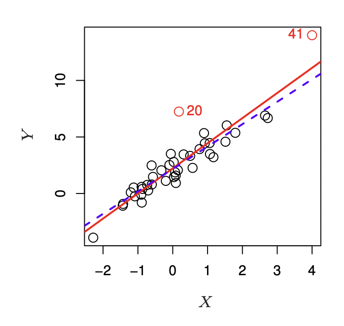
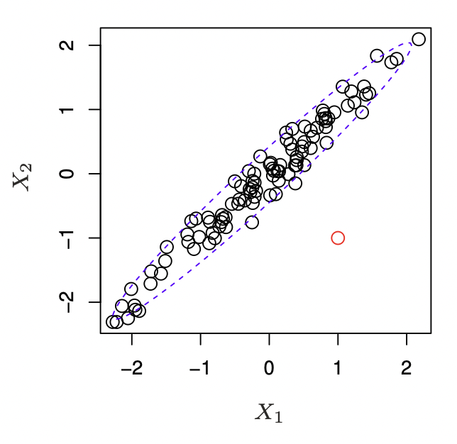
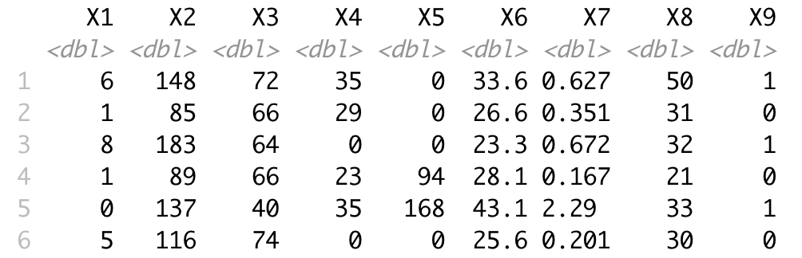
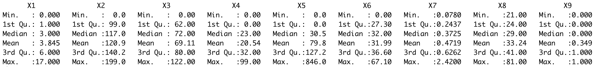
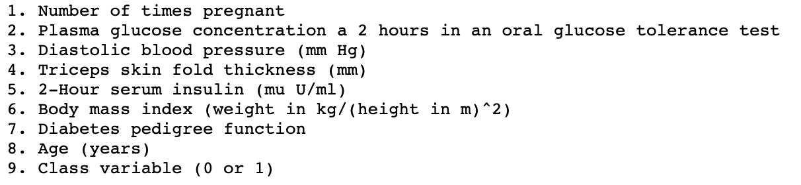

Sometimes a dataset can contain extreme values
that are outside the range of what is expected and unlike the other data
We will discover outliers and how to identify and remove them from your dataset
More closely
- What are Outliers?
- Standard Deviation Method
- Interquartile Range Method
- High Leverage Points
- Define outliers as samples that are exceptionally far from the mainstream of the data
- Outliers can have many causes, such as:
- Measurement or input error
- Data corruption
- True outlier observation
- There is no precise way to define and identify outliers in general because of the specifics of each dataset
- Nevertheless, we can use statistical methods to identify observations that appear to be rare
or unlikely given the available data
Standard Deviation Method
- If we know the distribution of values in the sample is Gaussian-like, we can use the standard deviation of the sample as a cut-off for identifying outliers
- What is the Gaussian distribution?
- summarize the percentage of values in the sample based on mean and s.d. only
- e.g. within one s.d. of the mean will cover 68 percent of the data
Example
- If the mean is 50 and the s.d. is 5
- then all data in the sample between 45 and 55 will account for about 68 percent of the sample
- We can cover more of the data sample if we expand the range as follows:
- 1 Standard Deviation from Mean: 68 percent
- 2 Standard Deviations from Mean: 95 percent
- 3 Standard Deviations from Mean: 99.7 percent
- A value that falls outside of 3 standard deviations is rare event at approximately 1 in 370 samples
- Three s.d. from the mean is a common cut-off in practice for identifying outliers in a Gaussian distribution
- for smaller samples of data, perhaps a value of 2 s.d. can be used
- for larger samples, perhaps a value of 4 s.d. (99.9 percent) can be used
Test data: pseudo code
- Generate a population 10,000 random numbers from Gaussian dist with (50, 5)
- data_mean, data_std := mean(data), std(data)
- Define outliers
- cut_off := data_std * 3
- lower, upper := data_mean - cut_off, data_mean + cut_off
- Remove outliers
- data < upper and data > lower
- Check the outcomes
- Identified outliers: 29
- Non-outlier observations: 9971
Interquartile Range Method (IQR)
- Not all data is normal
- A good statistic for summarizing a non-Gaussian distribution sample of data is the IQR
- remember a box (whisker plot)?
- Refer to the percentiles as quartiles (quart meaning 4) because the data is divided into four groups via the 25th, 50th and 75th values
- Identify outliers by defining limits on the sample values that are a factor $k$ of the IQR below the 25th percentile or above the 75th percentile
Test data: pseudo code
- Use the same data
- calculate interquartile range
- Define outliers
- cut_off := iqr * 1.5
- lower, upper := q25 - cut_off, q75 + cut_off
- Remove outliers
- data < upper and data > lower
- Check the outcomes
- Percentiles: 25th=46.685, 75th=53.359, IQR=6.674
- Identified outliers: 81
- Non-outlier observations: 9919
High Leverage Points

- 41 has high leverage: the predictor value for this observation is large relative to the others
- The red solid line is the least squares fit to the data, while the blue dashed line is the fit produced when observation 41 is removed
- High leverage observations tend to have a sizable impact on the estimated regression line
- It is cause for concern if the least squares line is heavily affected by just a few observations, because any problems with these points may invalidate the entire fit
- In a simple linear regression, high leverage observations are fairly easy to identify

- Neither its value for $X_1$ nor for $X_2$ is unusual
- So if we examine just $X_1$ or just $X_2$, we will fail to notice this high leverage point
- In order to quantify an observation's leverage, we compute the leverage statistic
- A large value of this statistic indicates an observation with high leverage
statistic leverage
- For a simple linear regression
- $$h_i = \frac{1}{n}+\frac{(x_i-\bar{x})^2}{\sum_{i'=1}^n (x_i-\bar{x})^2}$$
$$h_i = \frac{1}{n}+\frac{(x_i-\bar{x})^2}{\sum_{i'=1}^n (x_i-\bar{x})^2}$$
- $h_i$ increases with the distance of $x_i$ from $\bar{x}$
- There is a simple extension of $h_i$ to multiple predictors. Use the software.
- $h_i$ is always between 1/n and 1, and the average leverage for all the observations is always equal to (p + 1)/n
- So if a given observation has a leverage statistic that greatly exceeds (p+1)/n, then we may suspect that the corresponding point has high leverage
Incomplete data is almost everywhere
Transfer problems occur when data is collected automatically
Missing values, how to identify them?
Missing values, how to identify them?
Previously, we saw missing values in data: na, N/A, etc.
We can see how R recognizes these
using the is.na function
The problem is: missing values are imputed
Example
- Diabetes dataset that has been widely studied since the 1990s
- The dataset classifies patient data as either an onset of diabetes within five years or not
- You can learn more about the dataset here

How to detect missing values?

- Understand metadata, for sure
- Summary statistics narrow down the scope
- on some columns, a value of zero does not make sense and indicates an invalid or missing value

How to detect missing values?
- X2, X3, X4, X5, X6 are suspicious
- Calculate the number of zeros for these columns
- 5, 35, 227, 374, 11
- what do you think?
- Replace 0 values with NaN
There are several possible cases to consider, depending on why the data are missing